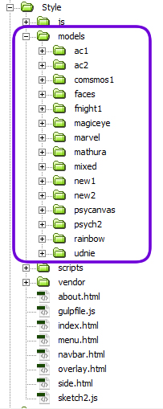
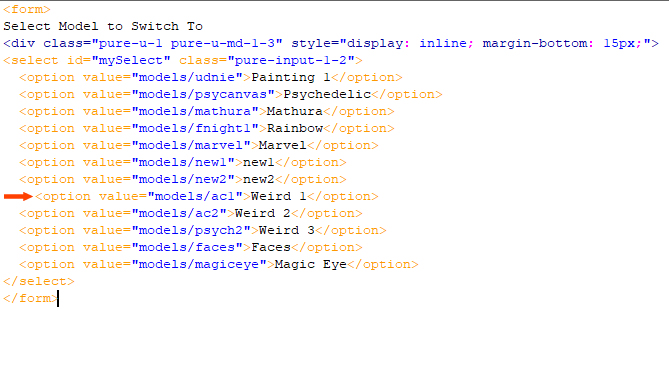
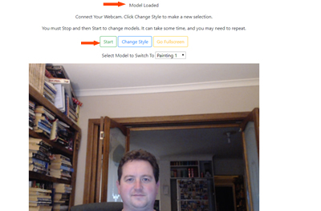
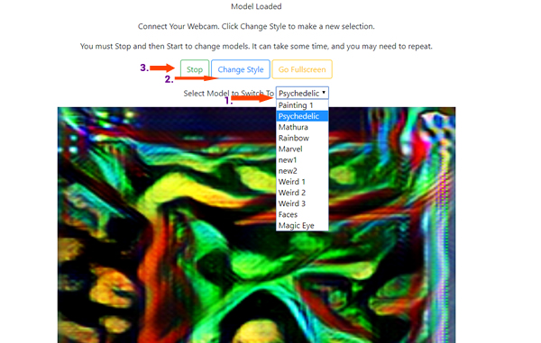

This site allows the quick and easy testing of style transfer models for ml5js
All models created are original, except for Painting 1 and Mathura, which are part of the original ml5js library. Please feel free to add more and contribute to this project on Github.To add new models, upload each model folder to the models directory.
When model is uploaded, add a new menu option to the menu.html file. This will make the model available to all views.
To load a model, wait until the text at the top of the screen reads "Model Loaded". Then press the green start button
To change model, select the model name from the dropdown list. Then click the blue "Change Style" button. Wait 5 seconds, then click to stop and start green buttons. Repeat the stop start button push again if it does not work.
